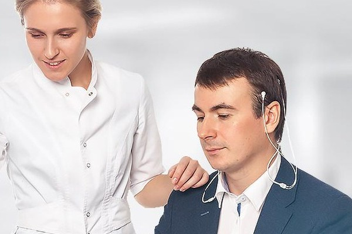

Нейро
НейроТело не лжёт.
Спросите свой мозг, а не своё мнение о себе
НейроПРО — лаборатория повышения личной эффективности. За 40 минут на сертифицированном оборудовании биологической обратной связи мы снимаем объективную картину работы вашей нервной системы и объясняем, что с ней делать.
Диагностика 40 минут · разбор с аналитиком · отчёт с рекомендациями за 3–5 дней

Съём ЭЭГ и параметров вегетативной нервной системыЭто не характер и не лень.
У этих состояний есть физиология
Всё, что перечислено ниже, обычно объясняют мотивацией и силой воли. На приборе видно другое: запас прочности нервной системы, способность к концентрации и к восстановлению. Это измеряется — и это тренируется.
Застой в бизнесе и работе
Усилий столько же, результат меньше. Часто дело не в стратегии, а в исчерпанном ресурсе.
Конфликты с близкими и коллегами
Раздражение там, где раньше его не было. Низкая стрессоустойчивость даёт срыв на ровном месте.
Не знаете, куда двигаться
Направлений много, ни одно не ощущается своим. Нет точки опоры для решения.
Не получается расслабиться или сконцентрироваться
Два противоположных навыка, за которые отвечают разные ритмы мозга. Оба тренируются по обратной связи.
Быстро устаёте, постоянно хотите спать
Сон не восстанавливает, к обеду ресурс на нуле. У усталости есть измеримая физиологическая основа.
Просто хотите увидеть себя объективно
Сильные и слабые стороны, зоны максимального и минимального КПД мозга — без интерпретаций и советов «по ощущениям».
Мы не берём цифры
с потолка. Это всё ваше
Всё, на что реагирует ваш мозг во время исследования, напрямую передаётся на сертифицированную аппаратуру. Картина складывается из ваших физиологических откликов, а не из ваших ответов о себе. Поэтому результат нельзя «подготовить» или приукрасить.
- Заявка и консультацияРазбираем задачу, с которой вы приходите, и записываем на исследование.
- Нейродиагностика40 минутНадевается шапочка ЭЭГ, вы смотрите видеоряд. Прибор снимает реакции на раздражители, кожно-гальваническую реакцию, дыхание и другие параметры.
- Разбор с аналитикомдо 40 минутВрач объясняет медицинские показатели, аналитик — что они означают для вашей работы, отношений и планов.
- Отчёт с рекомендациями3–5 днейПисьменный документ: сильные и слабые стороны, зоны максимального КПД, рекомендации по направлению движения.
- Курс нейротренинговИндивидуальная программа тренировки саморегуляции по обратной связи — под вашу задачу, а не по общему шаблону.
«Эгоскоп»: отвечаете вы,
значимость показывает тело
Программно-аппаратный комплекс объективного психологического анализа и тестирования (НПКФ «Медиком МТД», регистрационное удостоверение ФСР 2010/07252, патент РФ №2319444). Пока вы отвечаете стилусом на планшете, комплекс снимает три независимых потока данных — и по каждой шкале теста видно не только что вы ответили, но и насколько сильно тема вас задела.
- АвтодокументированиеОтветы, время реакции и сама последовательность действий записываются автоматически — без бумажных бланков и ручного ввода, который вносит искажения.
- ПиктополиграфияМоторика руки во время ответа: скорость, траектория, нажим стилусом. Видно, где ответ дан уверенно, а где с внутренним сопротивлением.
- ПсихофизиологияБлок датчиков синхронно с вопросами снимает пульс, кожно-гальваническую и сосудистую реакцию, мышечное напряжение.
- Профиль смысло-эмоциональной значимостиТри потока сводятся в одну величину по каждой шкале: насколько тема отзывается телом — и достоверно ли это отклонение.
Разбор строится на расчёте,
а не на впечатлении
Одна и та же выгрузка «Эгоскопа» у любого специалиста лаборатории даст одни и те же цифры и одни и те же разделы отчёта. Дальше начинается разговор — но уже поверх них.
Уровень и медиана
Балл шкалы считается в процентах от максимума именно этой шкалы, а телесный отклик — относительно медианы вашего же профиля. Вас сравнивают с вами, а не со «средним человеком».
Достоверность отклика
У каждого отклонения есть статистическая значимость. Ненадёжный отклик не встаёт в выводы наравне с надёжным — он отмечается как вариативный, зависящий от ситуации.
Ведущий канал
Видно, чем именно откликнулась тема: чувствами (пульс, кожа, сосуды), обдумыванием или мышечным усилием на стилусе. Одна и та же шкала читается по-разному в зависимости от канала.
Матрица «когниция × эмоция»
Каждая шкала — точка: по вертикали то, что вы ответили, по горизонтали то, как ответило тело. Расхождение между ними видно глазами, без таблиц и без пересказа.
Разделы отчёта
Шкалы раскладываются по смыслу: выраженные напряжённые формы, привычные формы, скрытое напряжение, не свойственно. Плюс итоги методики — например, индексы агрессивности и враждебности с указанием нормы.
Один первый шаг
Отчёт заканчивается не списком советов, а единственным конкретным действием на ближайшую неделю — на той шкале, которую выбрал расчёт, а не вкус консультанта.
Скрытое напряжение — случай, ради которого всё это
По шкале вы ответили сдержанно, ниже порога выраженности, — а тело откликнулось выше медианы, и отклик достоверен. Обычный опросник такую тему не увидит вовсе: в нём она выглядит как «мне это не важно». На матрице это точка слева сверху, и в отчёте у неё отдельный раздел.
Диаграмму, матрицу и все показатели считает алгоритм — детерминированно и воспроизводимо. Нейросеть в лаборатории отвечает только за текст: она получает готовый расчёт и не имеет права его пересчитать или переклассифицировать.
Четыре группы параметров
за одно исследование
Плюс набор дополнительных репрезентативных показателей — состав протокола зависит от задачи, с которой вы приходите. Работаем на сертифицированном медицинском оборудовании и собственном алгоритме обработки данных.
Измерить · понять · натренировать
Три продукта, которые работают как один маршрут. Можно остановиться на первом шаге, но смысл появляется, когда за измерением следует тренировка.
Нейродиагностика
Снятие объективных показателей работы нервной системы за 40 минут и разбор результата с врачом и аналитиком. Точка входа в продукт.
Нейроисследование
Углублённый протокол под задачу: расстановка людей по ролям, оценка запаса прочности, поиск зон максимального и минимального КПД.
Нейротренинг
Тренировка саморегуляции по обратной связи: вы видите собственные показатели на экране в реальном времени и учитесь ими управлять.
Виды нейротренинга
Альфа-тренинг — глубокая психологическая релаксация и активация творческих способностей.
Альфа-тета тренинг — навыки психической регуляции, релаксация, снижение выраженности аддикций.
Бета и бета-тета тренинг — коррекция дефицита внимания, снижение гиперактивности, восстановление когнитивных функций.
ЭЭГ-ЭМГ тренинг — максимальная концентрация внимания на фоне глубокой мышечной релаксации.
По физиологии — по частоте сердечных сокращений, температуре, дыханию, параметрам кровообращения, ЭМГ.
БОС по гемодинамике и стресс-тестирование — мозговой кровоток, центральная гемодинамика, реакция на нагрузку.
Один прибор — четыре разных вопроса
Где ваш реальный запас прочности, какие задачи вас не выжигают, а какие — только выглядят важными.
Расстановка ключевых фигур по объективным данным, а не по субъективному впечатлению. Роли в команде, риски выгорания.
Индивидуальные программы под роль в игре, тренировка концентрации и восстановления. Проверено в командном спорте.
Самопознание без эзотерики: сильные и слабые стороны, стрессоустойчивость, отношения, направление развития.
Там, где результат
виден на табло
Спорт высших достижений — самая честная проверка метода: там некуда деться от объективного результата.
ХК «Ак Барс»
Диагностика 10 ведущих и 10 перспективных хоккеистов и серия тренингов на индивидуальную и командную эффективность. Программа собиралась под роль в игре — вратарь, нападающий, защитник — и шла вместе с обычными физическими нагрузками. Результат подтверждён благодарственным письмом.
Максим Шмырев
Трёхкратный чемпион мира по пинг-понгу и 19-кратный чемпион России тренировался в лаборатории на аппарате под наблюдением врача-невролога.
РСБИ и пауэрлифтинг
Среди клиентов — Сергей Безруков, исполнительный директор Ульяновского филиала «Российского Союза Боевых Искусств», и Павел Чувилин, председатель спортивной федерации «Пауэрлифтинг».
Диагностика команды «Бизнес Молодости»
Самый необычный и самый сложный проект: измеряли эффективность целой команды, а не отдельного человека. Отсюда же выросла аудитория предпринимателей.
Александр Куприн
Профессиональный тренер по теннису прошёл исследование в рамках научного эксперимента лаборатории и снял видео-отчёт. Съёмочные группы телеканалов приезжали в лабораторию не раз.
Чиновники разных уровней
Тренинги проходили представители государственных структур. Половина клиентов возвращается повторно, каждый пятый приходит по рекомендации.
Диагностику ведёт врач,
интерпретацию — научный сотрудник
Это принципиальная разница с рынком консультантов: за прибором стоит медицинское образование, за выводом — научная работа.
Янa Пaвлeнкo
Проводит нейродиагностику: ведёт протокол исследования, отвечает за корректность съёма показателей и разъясняет медицинские результаты на разборе.
Владислав Щепочкин
Кандидат технических наук, доцент. Старший научный сотрудник НИТИ им. С. П. Капицы УлГУ, соучредитель малого инновационного предприятия — участника «Сколково». Интерпретирует результат.
Радик Гафуров
Предприниматель с 2001 года, основатель и руководитель ГК ГЛОБАЛ, президент АПМ РФ в 2011–2014. Лучший предприниматель Ульяновской области 2011 года.
Что стоит понять до того,
как вы придёте
Шесть текстов, объясняющих метод и то, как работает мозг. Без упрощений до «позитивного мышления» и без наукообразия ради наукообразия.
Любая психологическая анкета измеряет две вещи одновременно: то, что человек о себе думает, и то, что он готов о себе сообщить. Между этими двумя величинами и реальностью может лежать пропасть — особенно у руководителя, который годами тренировался выглядеть собранным.
Биологическая обратная связь снимает вопрос иначе. Мы не спрашиваем, устали ли вы, — мы смотрим, как ваша нервная система отвечает на нагрузку. Всё, на что реагирует мозг во время исследования, напрямую передаётся на аппаратуру: реакция на раздражители, кожно-гальваническая реакция, дыхание, ритмы. Из этого массива и складывается картина.
Отсюда главный тезис метода: мы никогда не берём цифры с потолка. Это всё ваше. Результат нельзя подготовить заранее, «правильно» ответить или приукрасить — тело отвечает быстрее, чем успевает включиться самопрезентация.
Практическое следствие простое. Там, где консультант строит гипотезу и проверяет её разговором, мы начинаем с измерения — и разговор ведём уже поверх данных.
Мозг постоянно генерирует электрическую активность, и она разложима на ритмы. Альфа связан с расслабленным бодрствованием и творческими состояниями, бета — с концентрацией и активной работой, тета — с пограничными состояниями между сном и явью, глубокой релаксацией, доступом к образному мышлению. Соотношение этих ритмов у каждого своё и меняется под нагрузкой.
Второй пласт — цена нагрузки: как меняется картина ритмов, когда задача становится трудной. Важно не то, справились вы или нет, а сколько это стоило: насколько глубоко система уходит в напряжение и как долго держится там после того, как задача снята.
Третий — сила, адаптированность и реактивность центральной и вегетативной нервных систем. Это и есть запас прочности: как быстро система выходит на нагрузку и, что важнее, как быстро возвращается обратно.
По отдельности каждый показатель мало что значит. Смысл появляется в связке — и именно связку разбирает аналитик, а не программа.
В разговорном языке стрессоустойчивость — это способность «держаться». В физиологии это две разные способности, и человек может быть силён в одной и слаб в другой: мобилизоваться под нагрузкой и восстанавливаться после неё.
Классическая ошибка сильного руководителя — прокачанная мобилизация при провальном восстановлении. Внешне это выглядит как выносливость, внутри накапливается как истощение. Одна и та же ситуация в разные периоды вызывает совершенно разные реакции: один раз бурю эмоций, другой раз спокойствие. Разница — не в ситуации, а в наличии сил.
Стресс-тестирование в протоколе как раз и разводит эти две величины. Мы даём контролируемую нагрузку и смотрим не только пик реакции, но и кривую возврата.
Дальше это превращается в конкретику: какие задачи для вас дорогие, какие дешёвые, где нужен режим восстановления, а где — тренировка концентрации.
Вес мозга взрослого человека — около 1,4 кг, примерно 2% массы тела. При этом на него приходится около 20% всей энергии, которую тело тратит за спокойный день. Работающему мозгу нужно порядка 12 Вт — примерно пятая часть мощности стандартной 60-ваттной лампочки.
Любопытно другое: короткие всплески умственного усилия почти не меняют этот расход. Базовый уровень сам по себе дорогой — даже в фазе медленного сна потребление глюкозы остаётся высоким, потому что мозг обязан постоянно поддерживать концентрации заряженных частиц на мембранах миллиардов нейронов.
Значит, чувство «я выжат головой» объясняется не сожжёнными калориями. Оно ближе к стрессовой реакции: исследования показывают, что интеллектуальная нагрузка заметно поднимает уровень гормонов стресса, давление и субъективную тревожность — при почти неизменном метаболизме мозга.
Отсюда вывод, важный для диагностики: усталость от работы головой — это вопрос состояния нервной системы, а не бюджета калорий. И она поддаётся измерению.
Принцип нейротренинга — замкнуть петлю. Прибор снимает ваш показатель и тут же возвращает его вам в виде сигнала на экране. Вы не знаете «как» им управлять, но мозг быстро находит способ, потому что видит результат немедленно. Так тренируется навык, который иначе описать невозможно.
Направление тренинга выбирается по цели. Альфа-тренинг — глубокая релаксация и активация творческих способностей. Альфа-тета — навыки психической регуляции и снижение выраженности аддикций. Бета и бета-тета — коррекция дефицита внимания, снижение гиперактивности, восстановление когнитивных функций. ЭЭГ-ЭМГ — состояние, в котором максимальная концентрация сочетается с глубокой мышечной релаксацией.
Есть и тренинги по другим контурам: частота сердечных сокращений, температура, дыхание, параметры кровообращения, мозговой кровоток, центральная гемодинамика.
Методика позволяет буквально видеть и слышать тончайшие изменения состояния организма при обучении навыкам психосоматической регуляции — для восстановления, укрепления здоровья и расширения психофизиологических возможностей.
В личной эффективности результат всегда можно объяснить обстоятельствами. В спорте — нельзя: есть табло. Поэтому спортивные проекты для нас — не только выручка, но и способ проверить метод.
В работе с хоккейным клубом программа собиралась не «для команды», а под роль в игре: вратарю, нападающему и защитнику нужны разные состояния. Вратарю — устойчивая концентрация в длинном ожидании, нападающему — быстрая мобилизация, защитнику — способность держать внимание широким. Курс аппаратных тренировок шёл параллельно с обычными физическими нагрузками, а не вместо них.
Тот же принцип работает в индивидуальных видах спорта: настольный теннис требует скорости реакции и устойчивости к сбою после ошибки, большой теннис — восстановления между розыгрышами.
Перенос на бизнес прямой. Роль в команде — это тоже требование к состоянию, а не только к компетенции. Человека можно поставить на позицию, к которой у него нет физиологического запаса, и получить выгорание вместо результата.
Что спрашивают чаще всего
Разбор результата вместе с врачом и аналитиком сразу после исследования и письменный отчёт с рекомендациями через 3–5 дней: сильные и слабые стороны, зоны максимального и минимального КПД, стрессоустойчивость, рекомендации по направлению движения и, если это уместно под вашу задачу, программа нейротренингов.
Процедура неинвазивная и пассивная: на голову надевается шапочка электроэнцефалографии, вы смотрите видеоряд. Прибор только считывает сигналы, ничего не подаёт в организм. Исследование проводит врач-невролог.
Точкой отсчёта. Психолог и коуч работают с тем, что вы рассказываете о себе; мы начинаем с измерения физиологии и только потом переходим к разговору. Это не заменяет психотерапию — это даёт ей объективную базу. И это единственный формат, где вы можете тренировать состояние по обратной связи, а не только обсуждать его.
Оно почти наверняка их покажет — в этом и смысл. Слабое место, о котором вы знаете, перестаёт управлять вами незаметно: его можно обойти расстановкой задач, компенсировать людьми рядом или натренировать. Отчёт устроен так, чтобы каждая слабая зона сопровождалась рекомендацией, а не диагнозом.
Сама диагностика — 40 минут. Беседа с аналитиком — до 40 минут. Отчёт готовится 3–5 дней. Нейротренинги идут курсом, длительность зависит от протокола и задачи.
Стоимость зависит от протокола: разовая диагностика, углублённое исследование и курс нейротренингов считаются отдельно. Возможна рассрочка на исследования и скидка при покупке курса тренингов. Точную цену на текущую дату уточняйте при записи.
Посмотрите на себя
как на данные
Начните с диагностики: 40 минут исследования, разбор с врачом и аналитиком, отчёт с рекомендациями через 3–5 дней.
Оставьте имя и телефон — откроется сообщение на +7 927 800 4477 с вашей заявкой, останется отправить. Либо звоните напрямую.